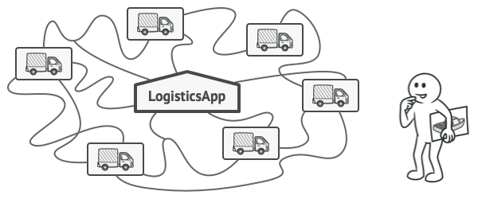
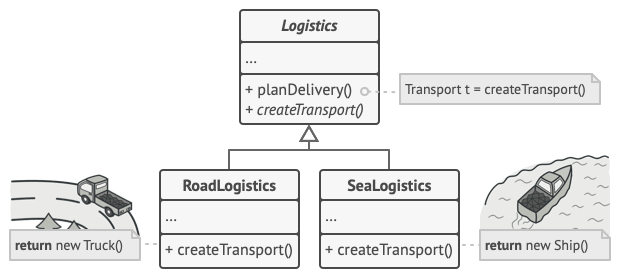
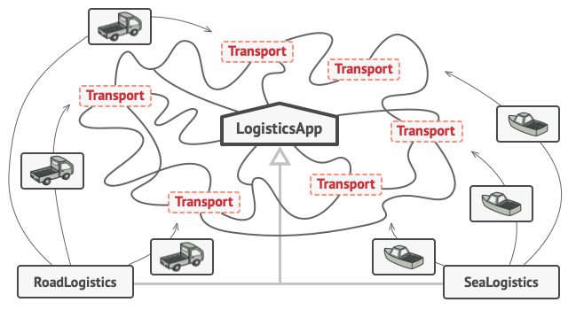
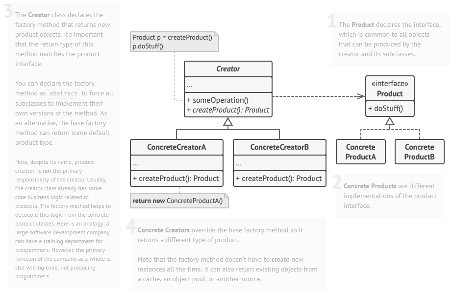
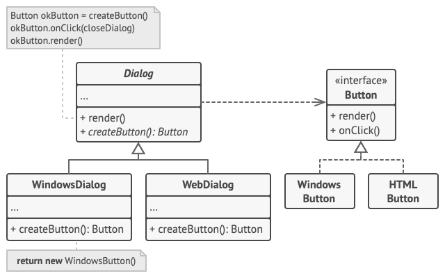

Factory Method
Also known as: Virtual Constructor
Intent

Factory Method is a creational design pattern that provides an interface for creating objects in a superclass, but allows subclasses to alter the type of objects that will be created.
Factory Method pattern
Problem
Imagine that you’re creating a logistics management application. The first version of your app can only handle transportation by trucks, so the bulk of your code lives inside the Truck class.
After a while, your app becomes pretty popular. Each day you receive dozens of requests from sea transportation companies to incorporate sea logistics into the app.

Adding a new transportation class to the program causes an issue
Adding a new class to the program isn’t that simple if the rest of the code is already coupled to existing classes.
Great news, right? But how about the code? At present, most of your code is coupled to the Truck class. Adding Ships into the app would require making changes to the entire codebase. Moreover, if later you decide to add another type of transportation to the app, you will probably need to make all of these changes again.
As a result, you will end up with pretty nasty code, riddled with conditionals that switch the app’s behavior depending on the class of transportation objects.
Solution
The Factory Method pattern suggests that you replace direct object construction calls (using the new operator) with calls to a special factory method. Don’t worry: the objects are still created via the new operator, but it’s being called from within the factory method. Objects returned by a factory method are often referred to as products.

The structure of creator classes
Subclasses can alter the class of objects being returned by the factory method.
At first glance, this change may look pointless: we just moved the constructor call from one part of the program to another. However, consider this: now you can override the factory method in a subclass and change the class of products being created by the method.
There’s a slight limitation though: subclasses may return different types of products only if these products have a common base class or interface. Also, the factory method in the base class should have its return type declared as this interface.

The structure of the products hierarchy
All products must follow the same interface.
For example, both Truck and Ship classes should implement the Transport interface, which declares a method called deliver. Each class implements this method differently: trucks deliver cargo by land, ships deliver cargo by sea. The factory method in the RoadLogistics class returns truck objects, whereas the factory method in the SeaLogistics class returns ships.

The structure of the code after applying the factory method pattern
As long as all product classes implement a common interface, you can pass their objects to the client code without breaking it.
The code that uses the factory method (often called the client code) doesn’t see a difference between the actual products returned by various subclasses. The client treats all the products as abstract Transport. The client knows that all transport objects are supposed to have the deliver method, but exactly how it works isn’t important to the client.
Structure

The structure of the Factory Method pattern
- The Product declares the interface, which is common to all objects that can be produced by the creator and its subclasses.
- Concrete Products are different implementations of the product interface.
- The Creator class declares the factory method that returns new product objects. It’s important that the return type of this method matches the product interface.
You can declare the factory method as abstract to force all subclasses to implement their own versions of the method. As an alternative, the base factory method can return some default product type.
Note, despite its name, product creation is not the primary responsibility of the creator. Usually, the creator class already has some core business logic related to products. The factory method helps to decouple this logic from the concrete product classes. Here is an analogy: a large software development company can have a training department for programmers. However, the primary function of the company as a whole is still writing code, not producing programmers.
Concrete Creators override the base factory method so it returns a different type of product.
Note that the factory method doesn’t have to create new instances all the time. It can also return existing objects from a cache, an object pool, or another source.
Pseudocode
This example illustrates how the Factory Method can be used for creating cross-platform UI elements without coupling the client code to concrete UI classes.

The structure of the Factory Method pattern example
The cross-platform dialog example.
The base Dialog class uses different UI elements to render its window. Under various operating systems, these elements may look a little bit different, but they should still behave consistently. A button in Windows is still a button in Linux.
When the factory method comes into play, you don’t need to rewrite the logic of the Dialog class for each operating system. If we declare a factory method that produces buttons inside the base Dialog class, we can later create a subclass that returns Windows-styled buttons from the factory method. The subclass then inherits most of the code from the base class, but, thanks to the factory method, can render Windows-looking buttons on the screen.For this pattern to work, the base Dialog class must work with abstract buttons: a base class or an interface that all concrete buttons follow. This way the code within Dialog remains functional, whichever type of buttons it works with.
Of course, you can apply this approach to other UI elements as well. However, with each new factory method you add to the Dialog, you get closer to the Abstract Factory pattern. Fear not, we’ll talk about this pattern later.
// The creator class declares the factory method that must
// return an object of a product class. The creator's subclasses
// usually provide the implementation of this method.
class Dialog is
// The creator may also provide some default implementation
// of the factory method.
abstract method createButton():Button
// Note that, despite its name, the creator's primary
// responsibility isn't creating products. It usually
// contains some core business logic that relies on product
// objects returned by the factory method. Subclasses can
// indirectly change that business logic by overriding the
// factory method and returning a different type of product
// from it.
method render() is
// Call the factory method to create a product object.
Button okButton = createButton()
// Now use the product.
okButton.onClick(closeDialog)
okButton.render()
// Concrete creators override the factory method to change the
// resulting product's type.
class WindowsDialog extends Dialog is
method createButton():Button is
return new WindowsButton()
class WebDialog extends Dialog is
method createButton():Button is
return new HTMLButton()
// The product interface declares the operations that all
// concrete products must implement.
interface Button is
method render()
method onClick(f)
// Concrete products provide various implementations of the
// product interface.
class WindowsButton implements Button is
method render(a, b) is
// Render a button in Windows style.
method onClick(f) is
// Bind a native OS click event.
class HTMLButton implements Button is
method render(a, b) is
// Return an HTML representation of a button.
method onClick(f) is
// Bind a web browser click event.
class Application is
field dialog: Dialog
// The application picks a creator's type depending on the
// current configuration or environment settings.
method initialize() is
config = readApplicationConfigFile()
if (config.OS == "Windows") then
dialog = new WindowsDialog()
else if (config.OS == "Web") then
dialog = new WebDialog()
else
throw new Exception("Error! Unknown operating system.")
// The client code works with an instance of a concrete
// creator, albeit through its base interface. As long as
// the client keeps working with the creator via the base
// interface, you can pass it any creator's subclass.
method main() is
this.initialize()
dialog.render()
Applicability
Use the Factory Method when you don’t know beforehand the exact types and dependencies of the objects your code should work with.
The Factory Method separates product construction code from the code that actually uses the product. Therefore it’s easier to extend the product construction code independently from the rest of the code.
For example, to add a new product type to the app, you’ll only need to create a new creator subclass and override the factory method in it.
Use the Factory Method when you want to provide users of your library or framework with a way to extend its internal components.
Inheritance is probably the easiest way to extend the default behavior of a library or framework. But how would the framework recognize that your subclass should be used instead of a standard component?
The solution is to reduce the code that constructs components across the framework into a single factory method and let anyone override this method in addition to extending the component itself.Let’s see how that would work. Imagine that you write an app using an open source UI framework. Your app should have round buttons, but the framework only provides square ones. You extend the standard Button class with a glorious RoundButton subclass. But now you need to tell the main UIFramework class to use the new button subclass instead of a default one.
To achieve this, you create a subclass UIWithRoundButtons from a base framework class and override its createButton method. While this method returns Button objects in the base class, you make your subclass return RoundButton objects. Now use the UIWithRoundButtons class instead of UIFramework. And that’s about it!
Use the Factory Method when you want to save system resources by reusing existing objects instead of rebuilding them each time.
You often experience this need when dealing with large, resource-intensive objects such as database connections, file systems, and network resources.
Let’s think about what has to be done to reuse an existing object:
First, you need to create some storage to keep track of all of the created objects.
When someone requests an object, the program should look for a free object inside that pool.
… and then return it to the client code.
If there are no free objects, the program should create a new one (and add it to the pool).
That’s a lot of code! And it must all be put into a single place so that you don’t pollute the program with duplicate code.
Probably the most obvious and convenient place where this code could be placed is the constructor of the class whose objects we’re trying to reuse. However, a constructor must always return new objects by definition. It can’t return existing instances.
Therefore, you need to have a regular method capable of creating new objects as well as reusing existing ones. That sounds very much like a factory method.
How to Implement
Make all products follow the same interface. This interface should declare methods that make sense in every product.Add an empty factory method inside the creator class. The return type of the method should match the common product interface.
In the creator’s code find all references to product constructors. One by one, replace them with calls to the factory method, while extracting the product creation code into the factory method.
You might need to add a temporary parameter to the factory method to control the type of returned product.
At this point, the code of the factory method may look pretty ugly. It may have a large switch statement that picks which product class to instantiate. But don’t worry, we’ll fix it soon enough.
Now, create a set of creator subclasses for each type of product listed in the factory method. Override the factory method in the subclasses and extract the appropriate bits of construction code from the base method.
If there are too many product types and it doesn’t make sense to create subclasses for all of them, you can reuse the control parameter from the base class in subclasses.
For instance, imagine that you have the following hierarchy of classes: the base Mail class with a couple of subclasses: AirMail and GroundMail; the Transport classes are Plane, Truck and Train. While the AirMail class only uses Plane objects, GroundMail may work with both Truck and Train objects. You can create a new subclass (say TrainMail) to handle both cases, but there’s another option. The client code can pass an argument to the factory method of the GroundMail class to control which product it wants to receive.
If, after all of the extractions, the base factory method has become empty, you can make it abstract. If there’s something left, you can make it a default behavior of the method.
Pros and Cons
You avoid tight coupling between the creator and the concrete products.
Single Responsibility Principle. You can move the product creation code into one place in the program, making the code easier to support.
Open/Closed Principle. You can introduce new types of products into the program without breaking existing client code.
The code may become more complicated since you need to introduce a lot of new subclasses to implement the pattern. The best case scenario is when you’re introducing the pattern into an existing hierarchy of creator classes.
Relations with Other Patterns
Many designs start by using Factory Method (less complicated and more customizable via subclasses) and evolve toward Abstract Factory, Prototype, or Builder (more flexible, but more complicated).
Abstract Factory classes are often based on a set of Factory Methods, but you can also use Prototype to compose the methods on these classes.
You can use Factory Method along with Iterator to let collection subclasses return different types of iterators that are compatible with the collections.
Prototype isn’t based on inheritance, so it doesn’t have its drawbacks. On the other hand, Prototype requires a complicated initialization of the cloned object. Factory Method is based on inheritance but doesn’t require an initialization step.
Factory Method is a specialization of Template Method. At the same time, a Factory Method may serve as a step in a large Template Method.